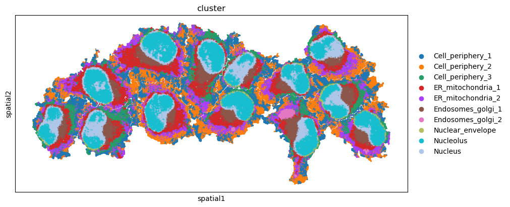
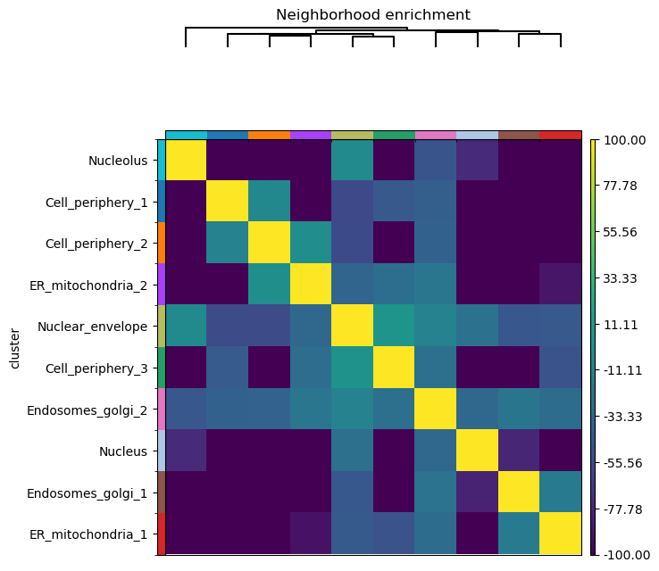
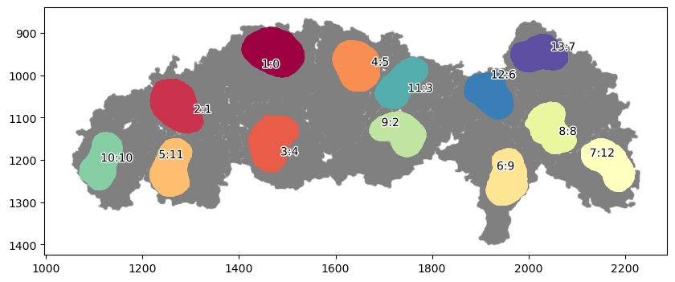
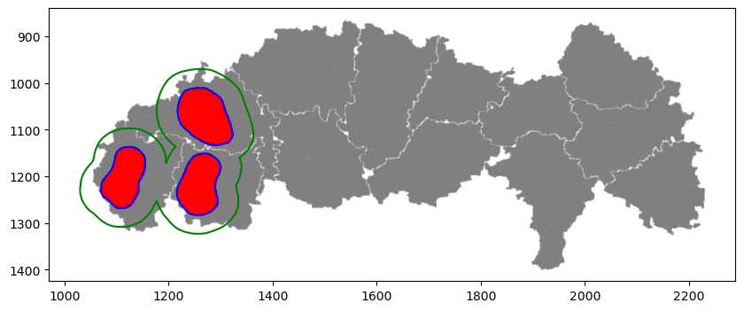
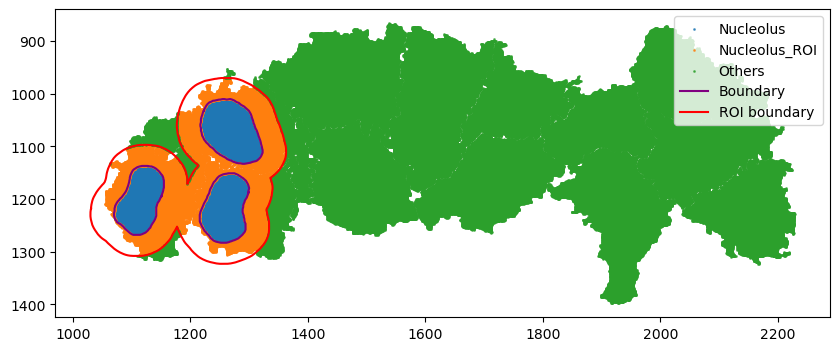
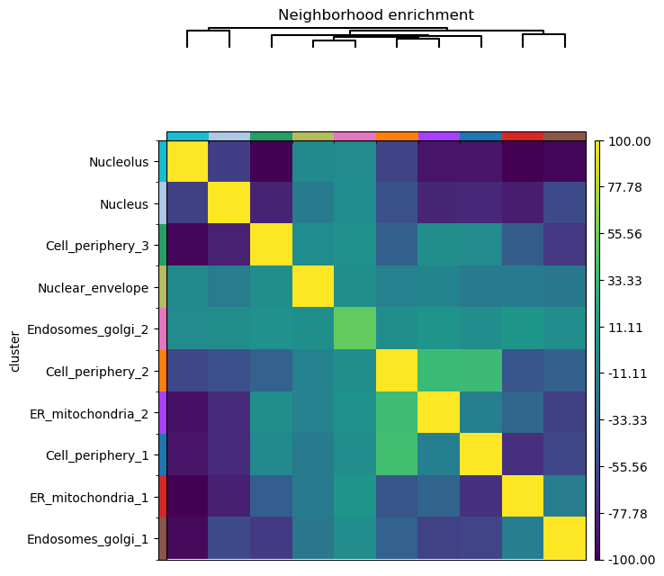

7: Working with Squidpy
Demonstrate the joint usage of spatialcells and squidpy to analyze 4i dataset by Gut et al, 2018
@author: Guihong Wan and Boshen Yan
@date: Feb 15 2024
@last updated: Feb 15 2024
Installing the environment
[1]:
%%bash
# conda env create --name spatialcells_env --file=conda.yaml
# conda activate spatialcells_env
# pip install scimap
# conda install -c conda-forge squidpy
[2]:
import numpy as np
import matplotlib.pyplot as plt
import squidpy as sq
import spatialcells as spc
Squidpy analysis
Original tutorial analysis for 4i from squidpy: link
[3]:
adata = sq.datasets.four_i()
100%|██████████| 173M/173M [00:08<00:00, 22.4MB/s]
/Users/ghwan/opt/anaconda3/envs/spatialcells_env/lib/python3.10/site-packages/anndata/__init__.py:51: FutureWarning: `anndata.read` is deprecated, use `anndata.read_h5ad` instead. `ad.read` will be removed in mid 2024.
warnings.warn(
/Users/ghwan/opt/anaconda3/envs/spatialcells_env/lib/python3.10/site-packages/anndata/_core/anndata.py:1908: UserWarning: Variable names are not unique. To make them unique, call `.var_names_make_unique`.
utils.warn_names_duplicates("var")
[4]:
sq.pl.spatial_scatter(
adata, color="cluster", shape=None, figsize=(10, 10)
)
WARNING: Please specify a valid `library_id` or set it permanently in `adata.uns['spatial']`
/Users/ghwan/opt/anaconda3/envs/spatialcells_env/lib/python3.10/site-packages/squidpy/pl/_spatial_utils.py:955: UserWarning: No data for colormapping provided via 'c'. Parameters 'cmap', 'norm' will be ignored
_cax = scatter(

[5]:
# Build spatial neighbors graph
sq.gr.spatial_neighbors(adata, coord_type="generic")
sq.gr.nhood_enrichment(adata, cluster_key="cluster")
sq.pl.nhood_enrichment(adata, cluster_key="cluster", method="ward", vmin=-100, vmax=100)
/Users/ghwan/opt/anaconda3/envs/spatialcells_env/lib/python3.10/site-packages/tqdm/auto.py:21: TqdmWarning: IProgress not found. Please update jupyter and ipywidgets. See https://ipywidgets.readthedocs.io/en/stable/user_install.html
from .autonotebook import tqdm as notebook_tqdm
100%|██████████| 1000/1000 [00:22<00:00, 45.12/s]
/Users/ghwan/opt/anaconda3/envs/spatialcells_env/lib/python3.10/site-packages/anndata/_core/anndata.py:522: FutureWarning: The dtype argument is deprecated and will be removed in late 2024.
warnings.warn(
/Users/ghwan/opt/anaconda3/envs/spatialcells_env/lib/python3.10/site-packages/squidpy/pl/_utils.py:555: FutureWarning: Series.__getitem__ treating keys as positions is deprecated. In a future version, integer keys will always be treated as labels (consistent with DataFrame behavior). To access a value by position, use `ser.iloc[pos]`
row_labels = adata.obs[key][row_order]

The squidpy tutorial allows calculating the neighborhood enrichment score for the entire sample. However, we may only be interested in a region of the image, for example, only around the three cells on the left. Spatialcells simplifies the region annotation, while providing convenient methods for region-based quantification.
[6]:
adata.obs["X_centroid"] = adata.obsm["spatial"][:, 0]
adata.obs["Y_centroid"] = adata.obsm["spatial"][:, 1]
adata.obs
[6]:
| x | y | is_nucleous | is_cytplasm | cell_id | leiden | cluster | X_centroid | Y_centroid | |
|---|---|---|---|---|---|---|---|---|---|
| 908860 | 1777 | 1201 | False | True | 140 | 1 | Cell_periphery_1 | 1777 | 1201 |
| 682735 | 1447 | 982 | True | False | 118 | 5 | Nucleus | 1447 | 982 |
| 806699 | 2089 | 1104 | False | True | 136 | 7 | Endosomes_golgi_1 | 2089 | 1104 |
| 790375 | 1306 | 1089 | True | False | 127 | 0 | Nucleolus | 1306 | 1089 |
| 835641 | 1902 | 1133 | False | True | 142 | 4 | ER_mitochondria_2 | 1902 | 1133 |
| ... | ... | ... | ... | ... | ... | ... | ... | ... | ... |
| 961485 | 1364 | 1246 | False | True | 143 | 1 | Cell_periphery_1 | 1364 | 1246 |
| 806705 | 2095 | 1104 | False | True | 136 | 7 | Endosomes_golgi_1 | 2095 | 1104 |
| 603424 | 1386 | 909 | False | True | 118 | 2 | Cell_periphery_2 | 1386 | 909 |
| 839951 | 2033 | 1137 | True | False | 136 | 0 | Nucleolus | 2033 | 1137 |
| 768582 | 2054 | 1067 | True | False | 136 | 5 | Nucleus | 2054 | 1067 |
270876 rows × 9 columns
[7]:
marker = ["is_nucleous"]
communitycolumn = "Nucleolus"
ret = spc.spatial.getCommunities(adata, marker, eps=10, newcolumn=communitycolumn)
fig, ax = plt.subplots(figsize=(10, 4))
spc.plt.plotCommunities(
adata, ret, communitycolumn, plot_first_n_clusters=20, s=2, fontsize=10, ax=ax
)
ax.invert_yaxis()
plt.show()

[8]:
# selecting cells of interest: the three cells on the left
communityIndexList = [1, 10, 11]
boundary = spc.spatial.getBoundary(
adata, communitycolumn, communityIndexList, alpha=10
)
roi_boundary = spc.spa.getExtendedBoundary(boundary, offset=40)
markersize = 1
fig, ax = plt.subplots(figsize=(10, 4))
## all points
ax.scatter(
*zip(*adata.obs[["X_centroid", "Y_centroid"]].to_numpy()),
s=markersize,
color="grey",
alpha=0.2
)
# Points in selected commnities
xy = adata.obs[adata.obs[communitycolumn].isin(communityIndexList)][
["X_centroid", "Y_centroid"]
].to_numpy()
ax.scatter(xy[:, 0], xy[:, 1], s=markersize, color="r")
# Bounds of points in selected commnities
spc.plt.plotBoundary(boundary, ax=ax, label="Boundary", color="b")
spc.plt.plotBoundary(roi_boundary, ax=ax, label="ROI boundary", color="g")
ax.invert_yaxis()
plt.show()

[9]:
spc.spatial.assignPointsToRegions(
adata,
[boundary, roi_boundary],
["Nucleolus", "Nucleolus_ROI"],
assigncolumn="region",
default="Others",
)
point_size = 1
fig, ax = plt.subplots(figsize=(10, 4))
for region in sorted(set(adata.obs["region"])):
tmp = adata.obs[adata.obs.region == region]
ax.scatter(
*zip(*tmp[["X_centroid", "Y_centroid"]].to_numpy()),
s=point_size,
alpha=0.7,
label=region
)
# Bounds of points in selected commnities
spc.plt.plotBoundary(boundary, ax=ax, label="Boundary", color="purple")
spc.plt.plotBoundary(roi_boundary, ax=ax, label="ROI boundary", color="r")
plt.legend(loc="upper right")
ax.invert_yaxis()
plt.show()
45636it [00:02, 19639.93it/s]
Assigned points to region: Nucleolus
40441it [00:01, 24158.65it/s]
Assigned points to region: Nucleolus_ROI

[10]:
roi_adata = adata[adata.obs.region != "Others"].copy()
roi_adata.obsm["spatial"] = np.array(roi_adata.obs[["X_centroid", "Y_centroid"]])
sq.gr.spatial_neighbors(roi_adata, coord_type="generic")
sq.gr.nhood_enrichment(roi_adata, cluster_key="cluster")
sq.pl.nhood_enrichment(roi_adata, cluster_key="cluster", method="ward", vmin=-100, vmax=100)
/Users/ghwan/opt/anaconda3/envs/spatialcells_env/lib/python3.10/site-packages/anndata/_core/anndata.py:1908: UserWarning: Variable names are not unique. To make them unique, call `.var_names_make_unique`.
utils.warn_names_duplicates("var")
100%|██████████| 1000/1000 [00:08<00:00, 117.28/s]
/Users/ghwan/opt/anaconda3/envs/spatialcells_env/lib/python3.10/site-packages/anndata/_core/anndata.py:522: FutureWarning: The dtype argument is deprecated and will be removed in late 2024.
warnings.warn(
/Users/ghwan/opt/anaconda3/envs/spatialcells_env/lib/python3.10/site-packages/squidpy/pl/_utils.py:555: FutureWarning: Series.__getitem__ treating keys as positions is deprecated. In a future version, integer keys will always be treated as labels (consistent with DataFrame behavior). To access a value by position, use `ser.iloc[pos]`
row_labels = adata.obs[key][row_order]

Quantifying the protein composition within each region
[11]:
nucleolus_comp = spc.msmt.getRegionComposition(adata, "cluster", regions=["Nucleolus"])
nucleolus_comp.rename(columns={"cell_count": "protein_count"}, inplace=True)
nucleolus_comp
[11]:
| cluster | protein_count | composition | |
|---|---|---|---|
| 0 | Nucleolus | 10883 | 0.540528 |
| 1 | Nucleus | 8035 | 0.399076 |
| 2 | Endosomes_golgi_1 | 534 | 0.026522 |
| 3 | Nuclear_envelope | 316 | 0.015695 |
| 4 | ER_mitochondria_1 | 306 | 0.015198 |
| 5 | Cell_periphery_3 | 57 | 0.002831 |
| 6 | Endosomes_golgi_2 | 2 | 0.000099 |
| 7 | ER_mitochondria_2 | 1 | 0.000050 |
| 8 | Cell_periphery_1 | 0 | 0.000000 |
| 9 | Cell_periphery_2 | 0 | 0.000000 |
[12]:
roi_comp = spc.msmt.getRegionComposition(adata, "cluster", regions=["Nucleolus_ROI"])
roi_comp.rename(columns={"cell_count": "protein_count"}, inplace=True)
roi_comp
[12]:
| cluster | protein_count | composition | |
|---|---|---|---|
| 0 | ER_mitochondria_1 | 7690 | 0.256376 |
| 1 | Cell_periphery_3 | 5687 | 0.189598 |
| 2 | ER_mitochondria_2 | 4836 | 0.161227 |
| 3 | Endosomes_golgi_1 | 4643 | 0.154792 |
| 4 | Cell_periphery_1 | 4495 | 0.149858 |
| 5 | Cell_periphery_2 | 2117 | 0.070578 |
| 6 | Nuclear_envelope | 278 | 0.009268 |
| 7 | Nucleus | 232 | 0.007735 |
| 8 | Nucleolus | 12 | 0.000400 |
| 9 | Endosomes_golgi_2 | 5 | 0.000167 |
[13]:
combined_comp = spc.msmt.getRegionComposition(adata, "cluster", regions=["Nucleolus", "Nucleolus_ROI"])
combined_comp.rename(columns={"cell_count": "protein_count"}, inplace=True)
combined_comp
[13]:
| cluster | protein_count | composition | |
|---|---|---|---|
| 0 | Nucleolus | 10895 | 0.217339 |
| 1 | Nucleus | 8267 | 0.164915 |
| 2 | ER_mitochondria_1 | 7996 | 0.159508 |
| 3 | Cell_periphery_3 | 5744 | 0.114584 |
| 4 | Endosomes_golgi_1 | 5177 | 0.103274 |
| 5 | ER_mitochondria_2 | 4837 | 0.096491 |
| 6 | Cell_periphery_1 | 4495 | 0.089669 |
| 7 | Cell_periphery_2 | 2117 | 0.042231 |
| 8 | Nuclear_envelope | 594 | 0.011849 |
| 9 | Endosomes_golgi_2 | 7 | 0.000140 |
Comparison with the protein composition of the entire sample.
[14]:
overall_comp = spc.msmt.getRegionComposition(adata, "cluster")
overall_comp.rename(columns={"cell_count": "protein_count"}, inplace=True)
overall_comp
[14]:
| cluster | protein_count | composition | |
|---|---|---|---|
| 0 | Nucleolus | 51802 | 0.191239 |
| 1 | Cell_periphery_1 | 37885 | 0.139861 |
| 2 | Cell_periphery_2 | 36226 | 0.133736 |
| 3 | ER_mitochondria_1 | 33660 | 0.124264 |
| 4 | ER_mitochondria_2 | 32378 | 0.119531 |
| 5 | Nucleus | 28458 | 0.105059 |
| 6 | Cell_periphery_3 | 22788 | 0.084127 |
| 7 | Endosomes_golgi_1 | 22402 | 0.082702 |
| 8 | Nuclear_envelope | 3674 | 0.013563 |
| 9 | Endosomes_golgi_2 | 1603 | 0.005918 |
[ ]: